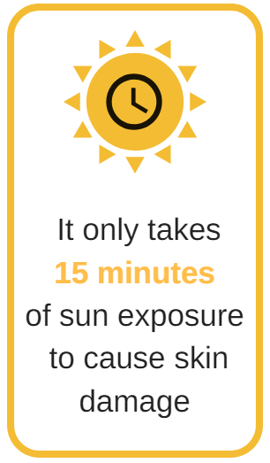
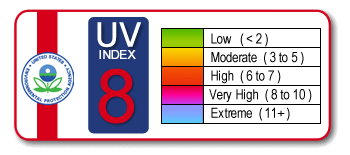
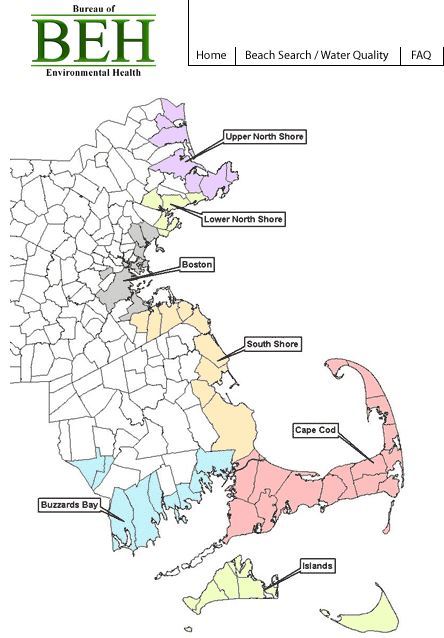

|
|||
Summer 2018 - Volume 1, Issue 3Please share the newsletter with people who may find MassTrack interesting. Subscribe @ Contact Us. News and Updates
Content updates: New interactive data summaries for Childhood Lead Screening, Hospitalizations, Pediatric Asthma, Pediatric Diabetes, and Outdoor Air Quality are now available on MA EPHT! Also, check out the new content page for Indoor Air Quality.
Data Updates: New data are available for Childhood Lead Screening and Blood Lead Levels, Pediatric Asthma, Pediatric Diabetes, Cancer, Birth Defects and all Hospitalizations/Emergency Department Visits datasets. Featured Topic: Skin Cancer
Skin cancer is the most common form of cancer in the United States. Most cases are caused by overexposure to UV light from the sun or from using tanning beds. There are two major types of skin cancer: melanoma and non-melanoma.

Melanoma is the most serious type of skin cancer. It occurs in skin cells called melanocytes, cells that produce pigment when your skin tans. Melanomas can start in moles but not always. Non-melanoma refers to skin cancers such as basal cell and squamous cell cancer, which develop in different types of cells than melanoma. All types of skin cancer can spread in the body, so early detection and treatment is very important. Data Highlights
For 2018, the American Cancer Society (ACS) has estimated that approximately 91,270 new melanomas will be diagnosed in the U.S., with about 9,300 deaths attributable to the disease. In Massachusetts this year, the ACS estimates that approximately 2,090 new cases of melanoma will be diagnosed. Melanoma is more common among people who have light-colored skin, are prone to sunburns, or have a family history of skin cancer. Although having darker skin tone lowers your risk, African Americans are more likely to be diagnosed with melanoma at a later stage and die of the disease than white Americans. Skin cancer risk increases with age. However, diagnoses are increasing among young adults, especially young women. To learn more, visit the Skin Cancer Foundation website. You can view melanoma incidence rates by county, community, and census tract on the MA EPHT website. They are obtained from the Massachusetts Cancer Registry (MCR) within the Massachusetts Department of Public Health's Office of Data Management and Outcomes Assessment. Non-melanoma skin cancers, the most common form of skin cancer, are not reported to the majority of state cancer registries, including Massachusetts. The ACS estimates that more than 3 million Americans are diagnosed each year with non-melanoma skin cancer, resulting in more than 2,000 deaths. How can I detect skin cancer? Keep an eye on your skin and talk to your doctor about any unusual spots or changes in moles. You can use the ABCDE's of Melanoma to check for possible signs of cancer: Asymmetrical: Does the spot have an irregular shape? Border: Is the border irregular or jagged? Color: Is the color uneven? Diameter: Is the spot larger than the size of a pea? Evolving: Has the spot changed over time? How can I reduce my risk of skin cancer? While not all cases are preventable, the majority of skin cancers are caused by UV exposure. To protect yourself, try to spend time in the shade when the sun is strong and wear protective clothing like wide brimmed hats, sunglasses, and long sleeves. Avoid tanning lamps and beds. Wearing sunscreen every day - even when it is cloudy - can reduce your risk of skin cancer. Sunscreen Tips:
 UV Index: The Environmental Protection Agency (EPA) publishes a UV Index that forecasts UV ray exposure in your zip code. If UV exposure reaches level 3 or greater, sun protection is recommended. You can view hourly and daily forecasts of the expected intensity of UV radiation on your mobile device by downloading EPA's UV Index Mobile App. For more information on melanoma and other forms of skin cancer, visit the American Association of Dermatologists, American Cancer Society and the Centers for Disease Control and Prevention websites. MA EPHT Tools and Tips Explore Maps in EPHT: Recreational Water Did you know that you can check the water quality of Massachusetts' public marine beaches online? EPHT's Recreational Water page features a link to the MDPH marine beaches website, which has a useful tool that provides the most up-to-date information on water quality at public marine beaches. Click on "Explore Maps & Tables" before you head out to your local marine beach this summer! To find information on water quality for public freshwater beaches, contact your local board of health. For information regarding water quality for State Park beaches, call the MA Department of Conservation & Recreation (DCR) Beaches Hotline at 617-626-4972. You can also visit MDPH's annual beach reports page to view historical freshwater and marine beach data. |
|||
|